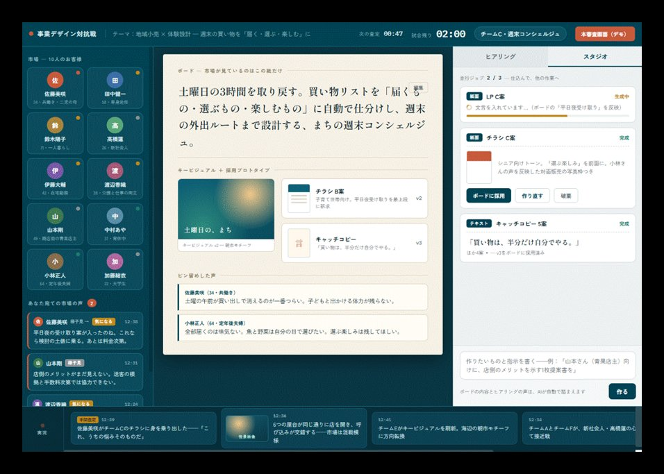
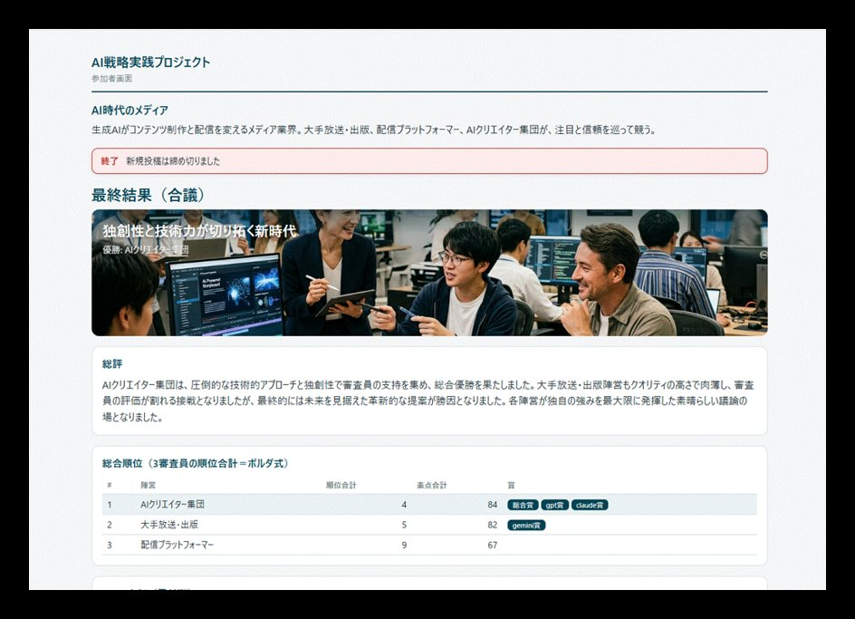

セッションの進め方と開催予定¶
各回は独立したテーマとし、前回までの知識は前提としない形式で進めます。途中からの ご参加も歓迎します。各回は A日程・B日程の2日程で、同じ内容 を開催します。 進め方・手元に残るもの・今後の開催予定をまとめています。
各セッションの構成例（約2〜2.5時間 ＋ 交流タイム）¶
各回は「戦略的な問い・文脈から出発し、手を動かして仕組みを作り、戦略インパクトを 考える」という一貫した流れで進めます。テーマに応じて構成は柔軟に調整しますが、概ね 以下の要素で構成します。
- 1. 戦略的な問い・文脈の提示と、参加者自身の言語化
- その回のテーマが「なぜ戦略的に重要なのか」を考える問いからスタート。参加者自身の 事業・業界の文脈で課題を言語化し、AIにも同じ問いを考えさせて比較するなど、 「Why before How」を実践します。
- 2. AIで動かす、作る ——AIとの対話から、動く仕組みへ
- AIとの対話（チャット）から始めて、AIにコードやコンテンツを作らせ、段階的にシステムと して動く仕組みへと発展させます。プログラミング経験は前提としません。各自の事業・業界に 応じた設計をAIに作らせるなど、動的に仕組みを作っていきます。
- 3. 戦略視座に立ち戻る
- 作ったものをもとに、自社の文脈にどう適用するか、どのような戦略インパクトがあり得るかを 考えます。ツールの便利使いで終わらせず、AIによる産業構造や組織構造の転換にまで波及する 戦略文脈にどう位置付けられるか、意識的に視野を広げます。
- 4. まとめと次回予告
- 持ち帰り用のファイル一式の確認と、次回テーマの予告。
- 終了後 ─ 質問回答・交流（最大60分程度）
- 本編終了後、質問にお答えしたり、参加者同士で感想や最新トピックを交わしたりする自由な 時間です。
セッション後にお手元に残るもの（ある回の例）¶
- 当日使用した映写資料
- 各自で実行・改変可能なサンプルコード（Python／Google Colaboratoryを主に使用）
- AIとの対話で使用したサンプルプロンプト・関連データファイル一式
- 事前に作り込んだ発展版のコード・アプリケーションのデモと解説
- セッション後に各自で取り組んでバリエーションを広げるための自習ガイド
- Zoom録画（当日参加できなかった方を含む有償メンバー全員に共有）
ビジネスで多忙な方が、録画・資料での参加でもAI操作の体験を各自のタイミングで進められる よう設計しています。
これからの開催¶
各回は A日程・B日程の2日程で、同じ内容 です。どちらか都合のよい日程にご参加ください。 いずれも20:00開始・オンライン（Zoom）、約2〜2.5時間です。
第6回AI対話と企業の命運
答えのない問いをAI対話で解く力は、個人と企業の命運をどう分けるか。
- A日程10/20(火)開催済み
- B日程11/6(金) 20:00〜開催済み
A日程とB日程は同じ内容です。都合のよい日程にご参加ください。
第7回AI駆動開発と企業戦略
システムを作るコストと時間が急激に圧縮された今、戦略と価値創造の主戦場はどこへ移るか。
- A日程11/17(火) 20:00〜開催済み
- B日程11/30(月) 20:00〜開催済み
A日程とB日程は同じ内容です。都合のよい日程にご参加ください。
第8回テーマは決まりしだいお知らせします
- A日程12/15(火) 20:00〜開催済み
- B日程2027/1/6(水) 20:00〜開催済み
A日程とB日程は同じ内容です。都合のよい日程にご参加ください。
次の開催日は、決まりしだいお知らせします。
開催予定（全回）¶
継続して参加される方は、カレンダー等にお控えください。開催日を過ぎた日程には「開催済み」と出ます。
第1回人間の認知容量の解除
- A日程5/26(火)開催済み
- B日程6/15(月)開催済み
第2回AIと共に、戦略の大転換を考える
- A日程6/23(火)開催済み
- B日程7/10(金)開催済み
第3回AI戦略 × 組織レイヤーへのインパクト
- A日程7/21(火)開催済み
- B日程8/3(月)開催済み
第4回物理世界に接地したAIは、競争のルールをどう書き換えるか
- A日程8/18(火)開催済み
- B日程9/3(木)開催済み
第5回AI戦略の未来シナリオ
- A日程9/15(火)開催済み
- B日程10/2(金)開催済み
第6回AI対話と企業の命運
- A日程10/20(火)開催済み
- B日程11/6(金) 20:00〜開催済み
第7回AI駆動開発と企業戦略
- A日程11/17(火) 20:00〜開催済み
- B日程11/30(月) 20:00〜開催済み
第8回テーマは決まりしだいお知らせします
- A日程12/15(火) 20:00〜開催済み
- B日程2027/1/6(水) 20:00〜開催済み
これまでの各回のテーマ・扱った領域は 開催履歴、参加方法は 参加する をご覧ください。
参加者コミュニティ（Circle）¶
有償メンバーには、参加者向けコミュニティ（Circle）へのご招待をお送りします。各回のご案内、過去回の アーカイブ、AI戦略関連ニュースの解説、参加者同士のディスカッションが続きます。AI時代の戦略の 引き出しを、継続して積み重ねる場です。

お知らせ・セッションアーカイブ・AI戦略関連ニュース・ディスカッションのスペースを用意しています。
セッションで使うアプリ（例）¶
各回では、その場で手を動かすための実践アプリを用意します。下記は過去回で実際に使ったアプリの 画面例です（クリックで拡大）。




今後の展開（検討中）¶
参加者コミュニティ（Circle）・セッションのアーカイブ・実践アプリを使える環境は、すでに運用しています。 これに加えて、以下を検討しています。
- 対面セッション・交流会の不定期開催（費用別途）
- 取り扱いテーマの募集
法人向けの個別開催・テーマのカスタマイズは、法人の方へ で承っています。
次回開催は 11/6(金) 20:00〜。参加を決めた方も、まず情報だけ受け取りたい方も、下のいずれかからどうぞ。